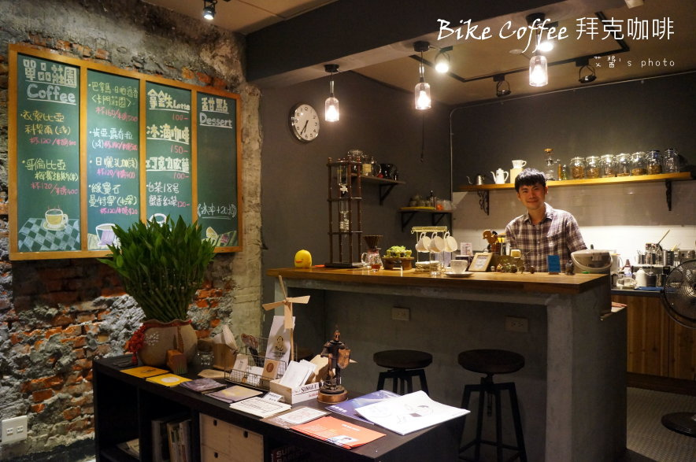
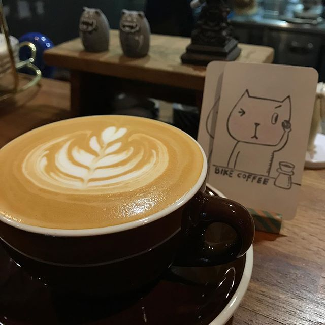

Bikecoffee - 拜克咖啡


第一次來的時候, 店裡只有老闆一人, 我就坐在吧檯前點了一杯耶加, 然後就跟老闆聊起來了。 原來老闆之前曾經騎著腳踏車環島賣咖啡, 為了尋找自己所追求的味道, 一邊跑遍全台咖啡店, 一邊騎著單車賣咖啡。老闆以前是在內湖當軟體工程師 後來因為對咖啡有熱忱決定轉職當咖啡師, 到現在已經開店第三年囉。 老闆的咖啡豆都以客人訂製為主, 為了顧及豆子品質, 不接其他店家訂單。特色是尾韻的櫻桃香, 小編我可是很喜歡這家店的單品淺焙呢, 人也很好常常多沖一些新品讓我試喝, 跟我聊聊咖啡經, 高雄有一半的咖啡店都是他介紹給我知道的XD 店家位於高雄火車站隔壁的小巷子, 交通也很方便。 除了咖啡, 還有甜點, 小編很愛這裡的巧克力塔, 大家有機會可以去瞧瞧喔~